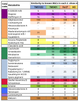

Genome Architecture and Biosynthetic Diversity in Streptomyces silvae
The four analyzed genomes are highly similar at species level, but differ in assembly contiguity, functional gene distribution, and biosynthetic architecture.
This page brings together circular genome maps, assembly statistics, functional category profiles, and antiSMASH-based BGC comparisons to distinguish conserved genomic features from strain-level variation within the S. silvae clade.
Key findings
Species-level similarity
Genome sizes are closely matched at 8.1–8.3 Mb, with GC contents of 71.3–71.43 %, supporting classification within the same species framework.
Assembly differences
M3 provides the most contiguous assembly, whereas the remaining strains are more fragmented despite overall genomic similarity.
Functional variation
Broad functional profiles are shared, but tRNA/rRNA counts and selected annotated categories differ between strains.
Biosynthetic diversification
A conserved BGC core is present across all genomes, while additional loci vary in class assignment, similarity, or strain-specific occurrence.
Strains included
- Streptomyces silvae TMS12I2
- Streptomyces silvae TMS4I1
- Streptomyces silvae For3T – type strain
- Streptomyces sp. M3
Circular genome maps
The circular maps summarize chromosome organization, annotation density, RNA gene positions, resistance-related loci, GC skew, and GC content across the four genomes.

The overall map architecture supports close relatedness across the clade, while local differences in contig structure and feature distribution point to strain-level genomic variation rather than species-level separation.
Genome statistics and assembly quality
Genome size and GC content remain highly consistent across all strains, but assembly quality and selected annotation metrics differ and help define intraspecific variation.

The genomes remain very similar in overall size and base composition, reinforcing their close taxonomic relationship within S. silvae.
M3 stands out as the most contiguous assembly, with only three contigs, the highest N50 value, and an L50 of 1.
Differences in tRNA and rRNA copy number suggest that the strains are not functionally identical and may differ in translational capacity or ecological adaptation despite their shared genomic framework.
Functional category distribution
RASTtk-based functional profiles allow comparison of how annotated gene content is distributed across major SEED categories in the four genomes.

Each concentric ring represents one genome. Segment size reflects the absolute number of genes assigned to a given functional category.
SEED color code
The four strains share a broadly similar functional landscape, consistent with their close relatedness and similar genome size.
TMS4I1 shows elevated gene numbers in several metabolic categories, whereas TMS12I2, For3T, and M3 remain more similar to one another.
Methods summary
Genome scaffolding was performed with RagTag using Streptomyces sp. M3 as reference. Genome annotation was generated with RASTtk, and circular visualizations were prepared with Circos.
Biosynthetic gene cluster distribution
antiSMASH-based comparison shows that the S. silvae clade retains a conserved biosynthetic backbone while varying at selected loci in class assignment, similarity to reference clusters, and strain-specific presence or absence.

The plot compares chromosomal positions and class assignments of BGCs across the four genomes and highlights both shared and divergent biosynthetic loci.
antiSMASH biosynthetic classes

All four genomes contain identical core clusters for alkylresorcinol, desferrioxamine B, ectoine, isorenieratene, and melanin.
Several additional clusters are shared but differ in similarity values or class assignment, indicating moderate divergence at selected genomic positions.
TMS12I2 and TMS4I1 each carry additional distinctive loci not mirrored in exactly the same way by the other strains.
Interpretation of BGC variation
The BGC comparison reveals a strongly conserved biosynthetic backbone across the S. silvae clade. Beyond the fully identical core clusters, ten further loci are shared by all strains, although their similarity to known reference clusters ranges from very low to comparatively high values.
Divergence becomes most visible at selected corresponding loci, especially in the genomic region positioned roughly between 4 and 5 o’clock in the circular plot. There, antiSMASH assigned different biosynthetic classes despite substantial underlying relatedness. In TMS12I2, the corresponding region lacks genes associated with butyrolactone biosynthesis and shows 77 % similarity to the maduralactomycin A cluster, whereas the related loci in TMS4I1, For3T, and M3 initially match prejadomycin at lower levels. Additional BLAST- and subcluster-based analyses nevertheless indicate that these regions remain broadly related overall.
Further strain-specific differences reinforce this pattern. TMS12I2 contains a unique cluster with 8 % similarity to an arseno-polyketide and lacks clusters related to stenothricin and griseobactin that are present elsewhere. TMS4I1 contains additional loci related to kinamycin (25 %) and nataxazole (7 %). Overall, biosynthetic divergence within the clade is real but moderate: the strains vary at selected loci while retaining a clearly shared biosynthetic framework.
Reference
Krzywinski M. et al. 2009. Circos: an information aesthetic for comparative genomics. Genome Research.